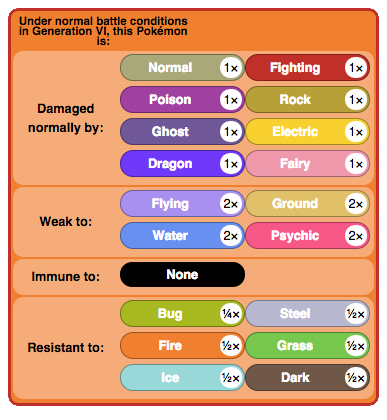
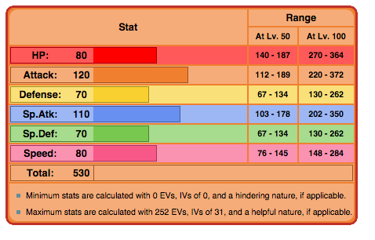
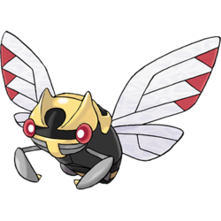
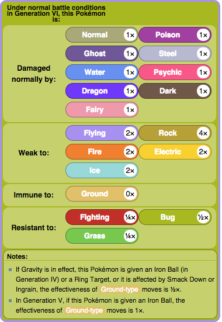
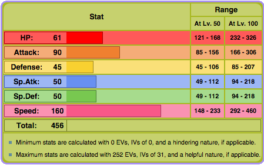

Baton Passers
Blaziken

Blaziken is not only a very powerful sweeper, but it is also a very effective baton passer. Its ability Speed Boost gives it +1 Speed after every turn, so that can be passed onto other teammates. If Blaziken is fully dedicated to Baton Passing, then Defenses should be raised with small investment in Attack. The item should be a Focus Sash so Blaziken can endure a one-hit KO.
 | Move 1: Blaze Kick/Flare Blitz | Move 2: Swords Dance/Substitute |
| Move 3: Protect | Move 4: Baton Pass |
Ninjask
Ninjask's Baton Passing is very similar to Blaziken. It is another popular choice since Speed Boost isn't the most common ability. It's possible to build Ninjask up as a physical sweeper, but Baton Passing is its best game. Its nature should be Impish, and EVs should raise HP and Defense, and a little bit in Speed. . Since Ninjask has weak defenses, it's better to raise on stat then evenly on both. The item has to be Focus Sash.
 | Move 1: U-Turn/X-Scissor | Move 2: Substitute/Substitute |
| Move 3: Protect | Move 4: Baton Pass |